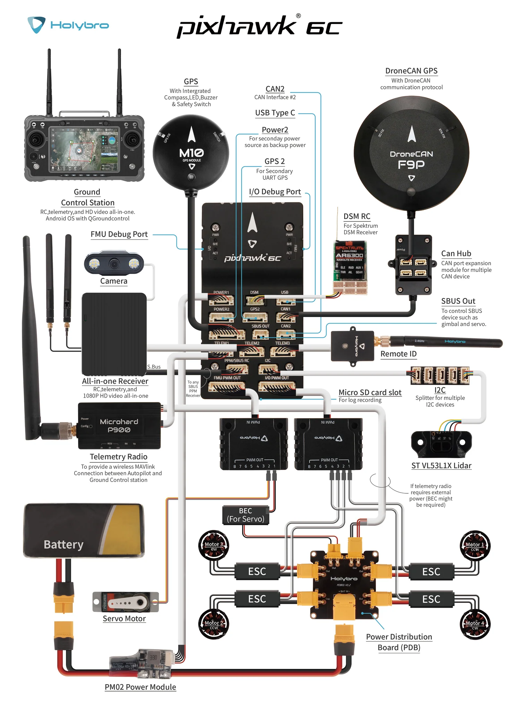
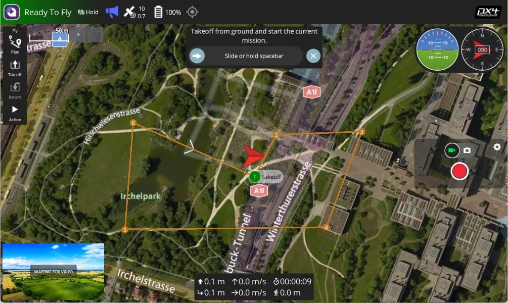

Practical 8a: Pixhawk and PX4, Commercial and R&D Autonomous Drone Systems¶
Overview¶
Pixhawk and PX4 are widely used in autonomous drone development, providing an open-source hardware and software ecosystem for UAV control. In this tutorial, we will introduce:
- Pixhawk: The hardware autopilot platform
- PX4: The open-source flight control firmware
- How to set up and use PX4 with Pixhawk
- PX4 Hardware In The Loop (HITL) Testing
- Creating Missions with QGC
This will help you transition from Crazyflies and Aerostack2 to more advanced UAV platforms.
What is Pixhawk?¶
Pixhawk is a family of open-source flight controllers developed for UAVs and robotics applications. It provides:
- High-performance autopilot capabilities
- Multiple sensor support (GPS, IMUs, barometers, etc.)
- Compatibility with PX4 and ArduPilot firmware
- Connectivity options like UART, I2C, CAN, MAVLink and DDS
Common Pixhawk Versions:¶
- Pixhawk 4: Standard for academic and research use
- Pixhawk 6X: More advanced processing capabilities
- Pixhawk 6C: Compact version with strong processing power
- Pixhawk Mini: Compact version for small UAVs
How to use a Pixhawk¶
This is the Pixhawk 6C you will be playing around with, see all of the ports for various inputs

This following wiring diagram is from an older Pixhawk model, but should show the key elements of connecting up and powering a Pixhawk

Flight Control Firmware¶
There is no universal controller design of converting from user inputs to motor thrust. In the same way, there are numerous other functionalities that an autopilot can cover. These can range from running control loops for gimbals, cameras and other actuation, to high level mission following and safety features. These functionalities are bundled into specific autopilot firmware which each offer a slightly different set of features, as well as differing user interfaces each with their advantages and drawbacks.
The two current most common autopilot firmware's in use in research settings are Ardupilot which offers the Arducopter firmware, and PX4 which offers Multicopter firmware. Both these firmwares are very extensive and cover numerous use cases. However, for our purposes we will only cover enabling autonomous flight through observing the mode of the autopilot.
Both Ardupilot and PX4 use the concept of flight modes, where each mode operates and supports different levels or types of flight stabilisation and/or autonomous functions. Traditionally this is for pilots to change between different controller layouts for different applications. It's necessary to change to the correct mode for safe and controllable flight. The following table shows the most often used flight modes within Starling.
| Ardupilot Mode | PX4 Mode | Functionality |
|---|---|---|
| stabilized | manual | Full manual control with RC sticks being sent directly to control roll, pitch, yaw and height |
| PosHold | position | UAV uses onboard sensing to stay in place, RC sticks used to translate position |
| loiter | auto.hold | Automatic mode where UAV stays in the same location until further instructions given. |
| land | auto.land | Automatic mode which attempts to land the UAV |
| Guided | offboard | Navigates to setpoints sent to it by ground control or companion computer |
As mentioned before, the base purpose of the firmware is to provide a given cascading PID controller for converting high level commands to motor thrusts. However both firmwares provide a plethora of other functionality from trajectory following, basic mission following, telemetry and communications and many others too.
As a controller developer, it is also useful to understand the differences between the Ardupilot and PX4 controllers and what real-world impacts they have. In most of drone targeted applications we only require either position or velocity control which works fairly consistently between the two firmwares.
In our own work, it has generally been noted that Ardupilot seems to be more suitable for outdoor flight, and PX4 for indoor flight. For this tutorial we will be developing a controller for indoor multi-vehicle flight and so we will assume the use of PX4. The biggest difference is actually in licensing where Ardupilot's license specifies that any developments must be contributed back, however PX4 is a bit more free allowing the forking and commercialisation without needing the announce or contribute (although this is not necessarily the best for the longevity of this open source project!).
PX4 Software Stack¶
PX4 consists of:
- PX4 Firmware - The core flight control software
- QGroundControl (QGC) - GUI for setup and mission planning
- MAVSDK (or other communication method) - API for developing drone applications
- Hardware-In-The-Loop (HITL) - Using real Pixhawk hardware for simulation or Software-In-The-Loop (SITL) for using simulated drones for testing.
Autopilot communication¶
Once in guided or offboard mode, the autopilot by default expects communications using the MAVLINK protocol. Traditionally this would have been used for a ground control station (GCS) to send commands to a UAV over a telemetry link. However, now it has also developed into a protocol for commanding the autopilot from an onboard companion computer over a USB or serial connection too. The MAVLink protocol is a set of preset commands which compatible firmwares understand and react to. In this tutorial we will primarily be observing the MAVlink interface, but we will not get into writing your own software with MAVlink yet.
With the growing prevalence of ROS2, all of the major firmwares have attempted to provide direct communication using ROS2's underlying communication/middleware protocol of DDS (Data Distribution Service). Although we will not cover this in this module, this is what we currently use to communicate between a companion computer and the Pixhawk for drone work.
Note however that even if DDS is enabled, autopilots will still send Mavlink messages down a Telemetry stream - often a dedicated low bandwidth communication channel for the monitoring of the drone's health and status.
Ground Stations¶
A key element of any drone operation is a competent and reliable ground station setup. The purpose of the ground station is to provide a reliable communication link with the drone and receive telemetry to be able to keep an eye on, and monitor the status of the drone. Often this is done via a second telemtry radio operating on a different frequency - in our case an SIK radio on 433MHz - with one end connected to the drone, and the other connected via USB to a laptop or computer (or handheld games console like the steam deck).
There are a number of choices for a piece of software which runs on the ground station. In industry, you may see Alterion or other softwares which provide an interface. In the open source world we either use mission planner with Ardupilot or QGroundControl with PX4. In this tutorial we will trying to use QGroundControl (QGC).

Tools like QGC are crucial for real-time flight monitoring, control, and mission planning. It allows users to:
- Monitor telemetry data (battery levels, GPS status, IMU readings, etc.).
- Send flight commands such as takeoff, landing, and mission execution.
- Configure drone parameters including PID tuning, sensor calibrations, and failsafe settings.
- Visualize the drone's location and trajectory on a map interface.
- Log and analyze flight data to debug issues or optimize performance.
Ground stations are useful as they enable:
- Safety: Enables real-time monitoring, preventing potential failures.
- Ease of Use: Provides a user-friendly interface to interact with the drone.
- Flexibility: Supports different flight modes (manual, autonomous, guided, etc.).
- Data Logging: Essential for post-flight analysis, AI training, and debugging.
- Remote Control: Operate the drone without requiring direct physical interaction.
Setting Up Pixhawk with PX4 and QGroundControl¶
Now let's set up your Pixhawk with PX4, connect to it and do some initial calibrations with QGC.
Setup Overview¶
- Install QGroundControl (QGC) (Download)
- Flash PX4 firmware onto Pixhawk via QGC
- Configure sensors and RC calibration
- Use QGC to set up some automated flights
- (Not today) Setup offboard control (for AI/robotics integration)
Install QGroundControl¶
Follow the following instructions for all platforms:
Power up and connect the Pixhawk¶
Tidily unbox the Pixhawk box in a way that you can put everything back later! For this tutorial, all you will need is:
- Pixhawk
- USB-C cable
Plug the USB-C cable from the Pixhawk to a port in your laptop
Now start QGroundControl
In the top left it will hopefully automatically pick up the Pixhawk and you can start browsing the settings and seeing the live view.
See https://docs.qgroundcontrol.com/master/en/qgc-user-guide/getting_started/quick_start.html for how to navigate and use QGC.
Flashing the Pixhawk¶
The first step for us is to flash the latest PX4 version onto the pixhawk. This can be done easily from within QGC.
Follow the following instruction page:
Sensor Calibration¶
The next step would be to perform sensor calibration in order to calibrate the onboard accelerometer and gyroscope. In the setup menu go to the sensors tab and follow the instructions.
Of course in practice you would perform the calibration after having built the drone, but this will do for now!
Continue Setup¶
Scroll through the other setup steps, there are a number that we are skipping in this session, but in practice you would have to usually complete:
- Radio Setup: It's standard to have a radio connected with both a receiver connected to the pixhawk and a transmitter with the dedicated pilot. The radio is important in order to have a backup method of controlling the drone, as well enabling mode switching between various manual flight regimes and offboard mode. Important for safety too as having a emergency stop setup is highly recommended
- Safety Setup: All the different safety systems built in from return to home to parachutes if they're installed.
- Parameters: All of these setup screens essentially manipulate the value of various parameters under the hood. Have a scroll through the parameter list and you will quickly see that there are a lot of options for a variety of scenarios. Bear in mind that PX4 is highly multi-functional as it has been written to work on anything from fixed-wing aircraft to mini-submarines!
You might want to try setting up the virtual joystick to enable easier testing! Joystick
Next step¶
So once the setup is complete, the last thing to have a look at is observing some of the MAVLink that's coming through
Go have a look at the Analyse View: analyse view, and then the mavlink inspector
However you will note that because we have a "drone" (just the Pixhawk sitting on your desk that wont fly) you wont really be able to do much with it. Traditionally we would use Software In The Loop testing to simulate a virtual Pixhawk for testing and development. However in this class we would like to try and use Hardware-In-The-Loop testing to "fly" your drone.
Using PX4 in HITL (Hardware-In-The-Loop) Simulation¶
For development and testing in industry, we often use Software-In-The-Loop (SITL) which allows us to test the functionality of one or more drones from our laptops without needing physical access to the real drones. To be specific the SITL literally runs the exact same firmware that would be running on the Pixhawk, and not some simulated version. Often a SITL is paired with a simulator of some description (by default gazebo) to provide physics input to simulate sensors and other external devices.
However for the purpose of this workshop, we have decided to introduce Hardware-In-The-Loop (HITL) testing. This is often a later step of development testing when you have written new firmware, or simply want to make sure the physical PCBs and microcontrollers are functioning as expected. In HITL testing, a real Pixhawk is plugged into a computer, where the computer again uses a simulator to simulate physics and sensors which is passed back into the Pixhawk. Cruically this hopefully avoids computer setup issues for software while allowing real-time testing on actual hardware.
To make this a bit different, and to hopefully avoid compatibility issues with other work, we have decided to recommend the use of JMavSim simulator instead of Gazebo for this session. JMavSim is another simulator specifically designed for fixed wing and multi-rotor platforms, but does not include the general physics capabilities that Gazebo includes. Because of this it is much lighter weight, and there have been works which run JMavSim onboard in the loop for model-predictive-control predictions.
- Read about it here (along with keyboard controls): https://github.com/PX4/jMAVSim
Installing Dependencies¶
Ensure you have QGC installed with joystick enabled
For non-Ubuntu, please see the following instructions:
Although Be Aware That It May Mess With Your Current Installation of Gazebo
Options are: - Docker (and forwarding the volume representing the Pixhawk) - Following the cherry-picked Ubuntu instructions below
Would not recommend a virtual machine since we are connecting real hardware up. (Unless you just want to try out the SITL)
Ubuntu¶
Git clone and install PX4
git clone --recursive https://github.com/PX4/PX4-Autopilot.git -b v1.15.4
cd PX4-Autopilot
NOTE: You will need the
--recursiveto ensure all the dependencies are also pulled. If you forgot to and your builds are failing, in the root of the repository rungit submodule update --init --recursive.
JMavSim Install (Ubuntu Tested)¶
# check ubuntu version
# otherwise warn and point to docker?
UBUNTU_RELEASE="`lsb_release -rs`"
if [[ "${UBUNTU_RELEASE}" == "14.04" ]]; then
echo "Ubuntu 14.04 is no longer supported"
exit 1
elif [[ "${UBUNTU_RELEASE}" == "16.04" ]]; then
echo "Ubuntu 16.04 is no longer supported"
exit 1
elif [[ "${UBUNTU_RELEASE}" == "18.04" ]]; then
echo "Ubuntu 18.04"
elif [[ "${UBUNTU_RELEASE}" == "20.04" ]]; then
echo "Ubuntu 20.04"
elif [[ "${UBUNTU_RELEASE}" == "22.04" ]]; then
echo "Ubuntu 22.04"
fi
# General simulation dependencies
sudo DEBIAN_FRONTEND=noninteractive apt-get -y --quiet --no-install-recommends install \
bc \
;
if [[ "${UBUNTU_RELEASE}" == "18.04" ]]; then
java_version=11
elif [[ "${UBUNTU_RELEASE}" == "20.04" ]]; then
java_version=13
elif [[ "${UBUNTU_RELEASE}" == "22.04" ]]; then
java_version=11
else
java_version=14
fi
# Java (jmavsim)
sudo DEBIAN_FRONTEND=noninteractive apt-get -y --quiet --no-install-recommends install \
ant \
openjdk-$java_version-jre \
openjdk-$java_version-jdk \
libvecmath-java \
;
# Set Java 11 as default
sudo update-alternatives --set java $(update-alternatives --list java | grep "java-$java_version")
Steps to Run PX4 HITL:¶
These instructions here are based on the following document: https://docs.px4.io/main/en/simulation/hitl.html
They have been updated and adjusted
Starting Pixhawk¶
Using the USB cable, plug the pixhawk into your computer.
Now start QGroundControl - if you are lucky after a few seconds, QGC should automatically detect your drone.
If not, it could be anything from the cable you are using to your OS not assigning the serial port correctly.
Configuring your Pixhawk/PX4 installation for HITL¶
Within QGC we need to setup PX4 into HITL mode - this follows the above linked guide
- Open Setup (click the Q in the top left) -> Vehicle Setup -> Safety
- Enable HITL mode by selecting Enabled from the HITL Enabled List
- Restart the Pixhawk (Unplug and plug it back in again)
- Go to Vehicle Setup again and go to Airframe
- Click on the Simulation airframe and ensure that "HIL Quadcopter X" is selected

- Note that we do not have an external radio so we will not be able to perform these steps (instead we use the QGC joysticks). There may be an error that comes up because of this - you are mostly okay to ignore these warning/error messages.
- In order to use QGC Joystick, you will need to change some parameters. Go to Vehicle Setup -> Parameters. Search and change the following.
- COM_RC_IN_MODE to "RC and Joystick with fallback". This allows joystick input and disables RC input checks.
- NAV_RCL_ACT to "Disarm". This ensures that no RC failsafe actions interfere when not running HITL with a radio control.

Running JMAVSim¶
Ensure QGC is closed first
Open a terminal and navigate to the PX4_Autopilot repo you cloned earlier
# Set Lat Long of UCL East
export PX4_HOME_LAT=51.537668693830824
export PX4_HOME_LON=-0.012029639288719024
export PX4_HOME_ALT=28.5
# Run JMavSim
./Tools/simulation/jmavsim/jmavsim_run.sh -q -s -d /dev/ttyACM0 -b 921600 -r 250
If you get an error make sure you have recursively git cloned
INFO Replace the serial port name /dev/ttyACM0 as appropriate. On macOS this port would be /dev/tty.usbmodem1. On Windows (including Cygwin) it would be the COM1 or another port - check the connection in the Windows Device Manager.
Once started, now separately (in a new terminal or otherwise) restart QGC.
Tada! After waiting about a minute for the system to initialise itself (It will complain at you a bunch), QGC should show that the system is ready to fly.
Tasks¶
- Takeoff the drone and manually fly it around the olympic park using the joysticks in the bottom of the screen
- See your trajectory in QGC
- Try some of the keyboard shortcuts of JMavSim to see your drone fly differently
Note: If you crash your drone somehow, you may need to restart your flight controller and jmavsim
-
When in midair, right click on a location and you will get some options to fly in a straight line to various locations.
-
Land or return to the start location
-
Have a play with the planning tools
- Once you have made a mission you will need to upload it (this may appear to fail)
- If you can't automatically start it, you may need to manually change the mode to mission.
-
Imagine you were a drone inspection company, do you think this software is suitable for your role?
- What's this software good at?
- What's it missing?
Summary¶
In this tutorial, we introduced the following
- Pixhawk: The hardware autopilot platform
- PX4: The open-source flight control firmware
- How to set up and use PX4 with Pixhawk
- PX4 Hardware In The Loop (HITL) Testing
- Creating Missions with QGC
For more details, refer to the PX4 Developer Guide.
This is all we'll cover in this course, as this content could fill a whole other module. In the optional session we will be trying to put some of this into practice on a real drone in the flight arena. Specifically connecting some of this up to ROS2 and Aerostack2 and seeing how this performs!